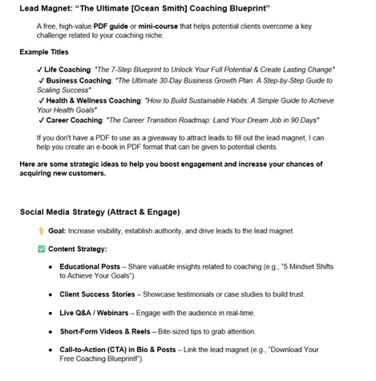
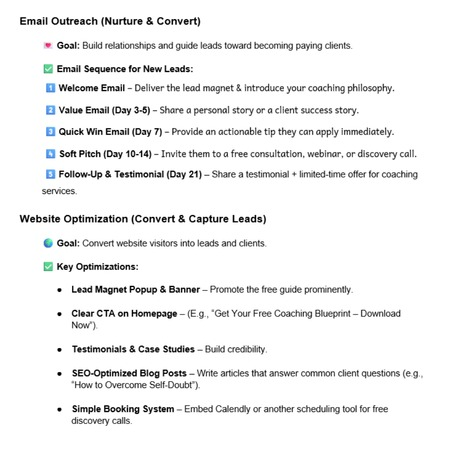
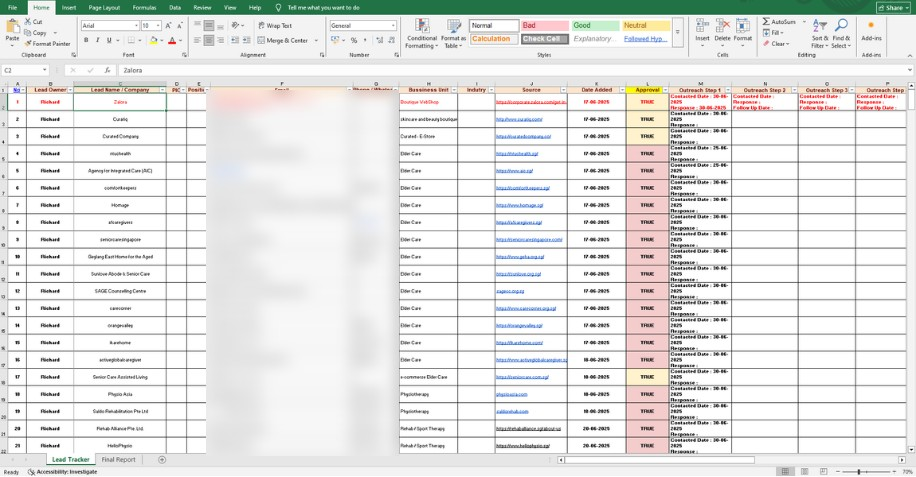

LEAD GEN WORK
I attract the right people, keep every lead organised, and get them on a call.
Lead generation is not one task, it is a system. I plan the lead magnet that pulls prospects in, manage the CRM data so nobody slips through the cracks, and run the outreach and meeting calls that turn names on a list into real conversations. Below is how I do each part, with the work to prove it.
A free offer your buyers actually want
A good lead magnet is not just a free PDF. I plan the whole path around it: the offer that solves one real problem, the content that promotes it, the emails that nurture new leads, and the page that captures them. You get a strategy your team can run from day one.
For you: a clear magnet idea for your niche, a content plan to promote it, and a ready-to-write email sequence that moves leads toward a sale.
- The magnet — a high-value PDF guide or mini-course with a niche-specific title, e.g. "The 7-Step Blueprint to Unlock Your Full Potential".
- Social media to attract — educational posts, client success stories, live Q&A, short reels and a clear CTA in bio.
- Email nurture to convert — a 5-email sequence from welcome to soft pitch.
- Website to capture — lead magnet popup and banner, a clear homepage CTA, testimonials, SEO blog posts and a simple booking system.


from a lead generation strategy I wrote for a coaching business
Clean data, so no lead slips away
Leads only turn into revenue when every one of them is tracked. I research and build targeted prospect lists, keep contacts verified and tagged by industry, and log every touchpoint with dates and responses. You always know who was contacted, who replied and who needs a follow-up today.
For you: an organised, up-to-date lead database your sales team can trust, in Google Sheets, Excel or the CRM you already use.
- Targeted prospect lists — B2B companies by segment, e.g. consultancies, accounting firms, law firms, SaaS and manufacturing in Indonesia, or eldercare and physiotherapy providers in Singapore.
- Complete, verified records — company, PIC, email, phone, address, industry and the source of every contact.
- Multi-channel tracking — which channel each lead was reached on: email, WhatsApp, Instagram or LinkedIn.
- Outreach log — contacted date, response and next follow-up date for every outreach step.
- Clean pipeline — invalid emails flagged, rejections marked, approvals checked before outreach.


Contact details blurred to protect prospects' privacy
From cold contact to a real conversation
Data and emails open the door; a conversation closes it. I reach out across email, WhatsApp and LinkedIn with messages written for each prospect, follow up without being pushy, and turn replies into booked meetings. On the call, I listen first, uncover what the prospect really needs, and agree a clear next step.
Why trust me with your prospects: I have been in sales since 2015, growing monthly sales from IDR 150M to IDR 400M through relationships customers trust. I also host Discovery Call mock-up sessions to train other virtual assistants.
- Build rapport and confirm their goals
- Uncover the real pain points behind the request
- Show how the offer fits, in their words
- Handle questions and agree the next step
- Send a recap and update the CRM the same day
a real meeting call I led, with live screen sharing
How I run outreach · tap a stepLET'S FILL YOUR PIPELINE
Tell me who your ideal customer is. I'll help you attract them, organise them and get them talking to you.